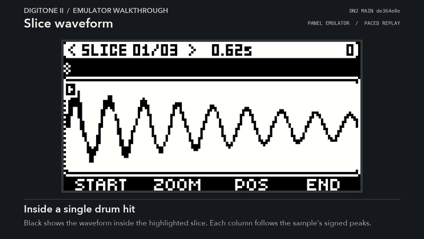

DN2 MOD PATCHER
Builds the Digitone II mod firmware here, in this page, from your own copies of three Elektron OS files. Nothing is uploaded anywhere. ← DN2 Sample Import · Download the Sample Import tool for offline use · RIFT, a second firmware ↓

1 · Version
Each version here was cleared by the project's ship gate. The page builds it, then checks the result is byte for byte that cleared file (its sha256) before it lets you save it.
2 · Your stock files
The Digitone II file must be stock OS 1.11, even if your instrument runs a later OS: the mod is built on 1.11, and the page stops if it is given any other version. If your instrument runs 1.12 or later, installing the mod is a downgrade: Elektron does not support downgrading, and projects made on the newer OS may not load or behave correctly (back them up first, and start new work in a project made on the mod). All of them are free downloads from Elektron's support pages for each instrument. Drop them on their boxes, or choose them. This browser remembers them for next time (they stay on this device; nothing is uploaded). Forget my files
3 · Build
4 · Flash
If your Digitone II runs OS 1.12 or later, flashing the mod takes it back to a 1.11-based OS: projects and sounds saved under the newer OS may not open on it. Back them up first, and keep the newer OS file to go back to.
Back up the +Drive and your projects first (Elektron Transfer). Then send the saved file as any Digitone II OS update: drag it onto Elektron Transfer with the instrument running and connected by USB. The stock OS 1.11 file, sent the same way, puts it back. If an update ever fails to start, the recovery route is the Early Start-up Menu (hold [FUNC] while powering on, then [TRIG 4]), receiving the stock file over a DIN MIDI cable (not USB) from Transfer's SysEx window.
Each version's notes, tests and known issues are in the project's FIRMWARE.md. What to know before and after flashing: Read me, below.
5 · Read me
The mod adds machines and features the DN2's manual doesn't cover. Where to find them and what to watch out for. What changed in each version, what to test and its known issues: the release notes in the Discord's #announcements and the project's FIRMWARE.md. The version you're running shows as "MOD v…" at the top of the sample browser.
What's in it
- Machinedrum: every MD machine except the sample-based E-12s, as one machine, Perc. Its TYPE control picks the machine and can be p-locked, so each step of a Perc track can be a different MD machine.
- Monomachine, polyphonic: SID 6581, DPRO Wave, DPRO Ddrw, DPRO Dens and VO-6, each note its own voice, as many at once as DSP time allows.
- Digitakt II: all its sample machines (Oneshot, Werp, Stretch, Repitch, Grid, Slice), a sample library on the +Drive, a sample pool per project, recording and resampling.
- Sequencer: Direct Jump and parameter slides.
- OS 1.11 only (not 1.12), so no Outbox.
Where things are
- New machines: MACHINE SEL ([FUNC] + [SYN]), after Swarmer.
- Perc: page 2's TYPE picks the machine. It can be p-locked per step.
- Sample recorder: FUNC + VOICE, then TRIM, FILE NAME and ASSIGN, as on the Digitakt II.
- Samples: turn SAMP for the project's samples. FUNC + YES opens the browser: +DRIVE (the library) and PROJECT RAM. FUNC + YES on a sample previews it; RIGHT opens its actions (LOAD TO PROJECT, rename, delete, move).
- Slices: on a Slice track's page press YES for the slice editor and slice grids; KEYBOARD mode with SLCE at NOTE plays the slices.
- Direct Jump: hold PTN, then YES (on) or NO (off).
- Parameter slides: TRIG page 2, SLD and SLEN.
- PING: in the FILTER type list.
- ERASE MOD DATA (before going back to stock for good): at the top of the sample browser, on +DRIVE press RIGHT. It asks twice.
- Your own samples: send them to the +Drive library with DN2 Sample Import.
Watch out for
- Stock OS 1.11 only. On OS 1.12 or later, flashing takes you back to a 1.11-based OS (see Flash).
- Back up the +Drive and your projects before every flash. Keep the stock 1.11 file and a DIN MIDI cable for recovery.
- DSP time. The Machinedrum and Monomachine machines are heavy. Many of them sounding at once can use more DSP time than there is; a voice that won't fit drops out for that moment.
- Monomachine voices never go quiet on their own (as on the Monomachine): shape them with the AMP envelope.
- Going back to stock: stock's FORMAT +DRIVE doesn't remove the mod's samples and data. Use ERASE MOD DATA first if you want it all gone.
6 · RIFT — a second firmware
RIFT
RIFT is a separate, second firmware for the Digitone II, not a version of the DN2 mk2 mod. It drops the Machinedrum and Monomachine machines and puts new engines in their place, starting with FASCIA (a physical and spectral percussion and tuned-body machine). It keeps the mod's Digitakt II sample machines (Oneshot, Werp, Stretch, Repitch, Grid, Slice, Flex), the +Drive library, recording and resampling, Direct Jump and parameter slides. You run either the DN2 mk2 mod or RIFT, not both. Unofficial: not made or supported by Elektron. Release notes: the Discord's RIFT ANNOUNCEMENTS channel.
- RIFT is new and early. Each version passed the same ship gate as the mod (emulators of both processors, the DSP checks, boot and save/load), but it has had far less time on real instruments than the mod. Expect rough edges.
- Back up first, every time: the +Drive and your projects with Elektron Transfer. Keep the stock OS 1.11 file and a DIN MIDI cable for recovery (see Flash, above). The update route and the start-up code are Elektron's own, untouched, as with the mod.
- Coming from the DN2 mk2 mod: flash RIFT the same way as any version of the mod. Tracks using Perc (Machinedrum) or the Monomachine machines open as FM Tone in RIFT, as stock opens them: their sound is not kept. Save a copy of any project you care about before opening it in RIFT, and start RIFT work in new projects.
- Going back to the mod or to stock: FASCIA tracks are RIFT's own; they will not sound the same, or at all, on the mod or on stock OS. Keep RIFT projects apart.
- Same stock files: RIFT is built here from the files in step 2 (Digitone II OS 1.11 and Digitakt II OS 1.17; the Machinedrum file where a version lists it). The Monomachine file is not needed.
Where RIFT's things are
- FASCIA and the sample machines: MACHINE SEL ([FUNC] + [SYN]), after Swarmer. FASCIA's pages: SYN1 EXCITERS, SYN2 RESONATORS, SYN3 SPECTRAL, SYN4 ONSET/INTERACT.
- FASCIA is heavy: when its voices need more DSP time than there is, a voice drops out for that moment; sample voices always get their time first.
- Samples, recorder, slices, Direct Jump, slides: as in the mod (Where things are, above).
- The version: at the top of the sample browser (RIFT v…).